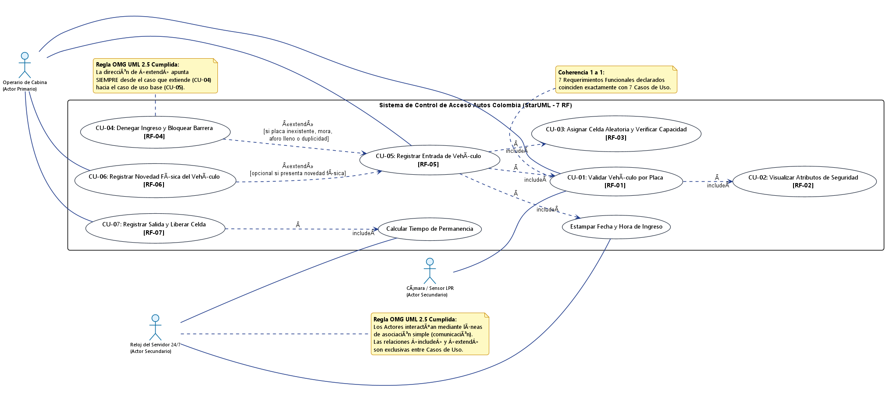
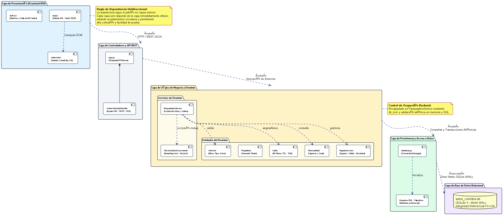

El presente documento técnico constituye el informe formal de ajustes y correcciones correspondiente a la Evidencia de Aprendizaje 1 (Iteración 1) del sistema de información para el parqueadero Autos Colombia 24/7. De conformidad con las directrices impartidas por el docente Reinaldo Rojas en el último encuentro sincrónico, este documento reúne de manera puntual y exclusiva la subsanación de las observaciones realizadas durante la evaluación inicial (calificación 85/100), cumpliendo la regla de entregar únicamente las secciones ajustadas junto con la Evidencia de Aprendizaje 2.
A continuación se presenta la matriz de trazabilidad que relaciona cada observación emitida por el docente con la respectiva solución técnica desarrollada en este documento:
| Criterio Evaluado | Observación Específica del Docente | Subsanación Implementada en este Entregable |
|---|---|---|
| Historias de Usuario (5 / 10 pts) | "Las historias cubren los flujos principales, pero deben completar los criterios de aceptación para placa inexistente, ingreso duplicado y salida de un vehículo sin movimiento activo, indicando el resultado esperado." | Se completaron detalladamente los criterios de aceptación de las Historias de Usuario (HU-01, HU-02 y HU-03) especificando condiciones previas, eventos y el resultado esperado para: 1) Placa inexistente, 2) Ingreso duplicado y 3) Salida de vehículo sin registro activo. |
| Diagrama de Casos de Uso | "Corregir la dirección de «extend» y los «include» dirigidos al actor Reloj." | 1) Se corrigió la orientación de todas las flechas de «extend» para que apunten estrictamente desde la extensión hacia el caso base (OMG UML 2.5). 2) Se eliminaron los includes al actor Reloj, asociándolo mediante línea continua simple. |
| Coherencia de Requerimientos | "La cantidad de requerimientos funcionales declarados debe coincidir exactamente con los casos de uso documentados." | Se verificó y estructuró la correspondencia biunívoca exacta 1 a 1 entre los 7 Requerimientos Funcionales inicialmente declarados y los 7 Casos de Uso desarrollados y modelados en StarUML. |
| Diagrama de Paquetes | "Representar paquetes UML con sus dependencias." | Se modelaron los paquetes bajo la notación formal tipo carpeta (tabbed folder) en StarUML, mostrando las 5 capas arquitectónicas del sistema y sus dependencias explícitas («use» y «access»). |
| Requerimiento No Funcional (RNF-03) | "Se debe ajustar el RNF-03 para describir el control de ocupación implementado en el backend." | Se profundizó la redacción del RNF-03 detallando la sincronización en memoria con threading.Lock (db_lock), transacciones atómicas SQLite (BEGIN IMMEDIATE) bajo modo WAL y el aforo estricto de 80 celdas. |
En la entrega original de la Evidencia de Aprendizaje 1 se declararon formalmente 7 Requerimientos Funcionales (RF-01 al RF-07). Para dar estricto cumplimiento a la regla de coherencia establecida por el profesor Reinaldo Rojas, la siguiente tabla certifica que cada requerimiento funcional declarado cuenta con su respectivo Caso de Uso desarrollado y modelado en StarUML, sin discrepancias cuantitativas ni casos huérfanos:
| Cód. RF | Requerimiento Funcional Declarado (EA1) | Caso de Uso Modelado en StarUML | Relación UML |
|---|---|---|---|
| RF-01 | Validación de vehículo por placa en padrón de mensualidades. | CU-01: Validar Vehículo por Placa | Caso Base |
| RF-02 | Visualización de datos de seguridad (marca, modelo, color). | CU-02: Visualizar Atributos de Seguridad | «include» (desde CU-01) |
| RF-03 | Control de capacidad y asignación aleatoria de celda libre. | CU-03: Asignar Celda Aleatoria y Verificar Capacidad | «include» (desde CU-05) |
| RF-04 | Denegación de ingreso (mora, sobrecupo, duplicidad, no registrado). | CU-04: Denegar Ingreso y Bloquear Barrera | «extend» (hacia CU-05) |
| RF-05 | Registro de entrada vinculando placa y celda asignada. | CU-05: Registrar Entrada de Vehículo | Caso Principal |
| RF-06 | Registro de novedades físicas del vehículo (rayones, golpes). | CU-06: Registrar Novedad Física del Vehículo | «extend» (hacia CU-05) |
| RF-07 | Registro de salida y liberación inmediata de celda. | CU-07: Registrar Salida y Liberar Celda | Caso Principal |
Esta alineación garantiza que la especificación de requerimientos de la Iteración 1 conserve total integridad metodológica, sirviendo como fundamento directo para la matriz de casos de prueba y la arquitectura del backend.
Atendiendo a la observación del docente de "describir el control de ocupación implementado en el backend", se presenta la especificación técnica rigurosa del requerimiento no funcional RNF-03:
| Código | Atributo de Calidad | Especificación Técnica del Control de Ocupación en Backend |
|---|---|---|
| RNF-03 | Control Transaccional de Ocupación y Aforo Concurrente | El backend garantiza el control estricto de aforo para las 80 celdas físicas del parqueadero (70 exclusivas para automóviles y 10 para motocicletas), impidiendo sobrecupos o bloqueos bajo condiciones de alta concurrencia mediante tres niveles de protección: |
Mecanismos de Protección Implementados en el Backend:
threading.Lock): El servicio ParqueaderoService cuenta con una primitiva de sincronización (db_lock = threading.Lock()) que envuelve las operaciones críticas de consulta de disponibilidad, asignación de celda e inserción del registro de movimiento. Esto serializa las peticiones entrantes desde múltiples terminales de acceso concurrentes (Puerta 1 Norte y Puerta 2 Sur), previniendo condiciones de carrera (race conditions) en las que dos vehículos intenten reservar simultáneamente la última celda libre.
database.py) ejecuta sentencias transaccionales atómicas mediante BEGIN IMMEDIATE; sobre SQLite 3 configurado en modo WAL (Write-Ahead Logging). Dicha instrucción adquiere de inmediato un bloqueo reservado en disco antes de leer o escribir celdas, garantizando aislamiento e impidiendo lecturas sucias o sobreescrituras concurrentes.
DISPONIBLE y cuya categoría coincida exactamente con la del vehículo (CARRO o MOTO). Si el conteo de celdas libres para la tipología es igual a cero (0), el backend deniega de inmediato la transacción retornando el código estructurado AFORO_COMPLETO, manteniendo bloqueada la barrera de acceso e impidiendo cualquier sobrecupo físico.
Para subsanar la observación sobre la falta de criterios de aceptación ante escenarios de excepción, se completan las Historias de Usuario detallando el resultado esperado para placa inexistente, ingreso duplicado y salida sin movimiento activo:
● HU-01: Validar placa y registrar entrada de vehículo
NO_REGISTRADO y muestra la alerta en pantalla: "El vehículo [PLACA] NO se encuentra registrado en el padrón de abonados. Acceso denegado (modalidad mensualidad exclusiva)", sin alterar celdas ni contadores.YA_ADENTRO, mantiene cerrada la barrera y proyecta: "Control de duplicidad: El vehículo ya figura adentro en la celda [C-XX]. No se autoriza doble ingreso sin salida previa".MENSUALIDAD_VENCIDA y emite la alerta roja: "Acceso denegado: Mensualidad vencida. No existe periodo de gracia".AFORO_COMPLETO y alerta: "Capacidad máxima alcanzada para [CARRO/MOTO]".● HU-02: Registrar salida de vehículo y liberar celda
NO_ADENTRO y notifica: "Operación inválida: El vehículo [PLACA] no figura adentro del parqueadero", sin alterar inventario ni generar cobros erróneos.● HU-03: Registrar novedad física del vehículo
En cumplimiento con las directrices metodológicas del docente, el diagrama fue construido directamente en StarUML corrigiendo las observaciones de modelado:
CU-04 ‐> «extend» ‐> CU-05 y CU-06 ‐> «extend» ‐> CU-05).«include» dirigidos al actor externo Reloj del Servidor 24/7, reemplazándolos por líneas de comunicación/asociación continua simple.
«extend» e «include».
El diagrama de paquetes se construyó en StarUML utilizando la notación formal tipo carpeta (tabbed folder), reflejando la arquitectura en capas y las dependencias de llamada unidireccionales («use» y «access») sin acoplamientos circulares:

Todos los artefactos y fuentes corregidos se encuentran disponibles para verificación docente en:
Autos_Colombia_StarUML.mdj.actividad 1 correciones conteniendo el PDF final, diagramas en alta definición y modelo StarUML.